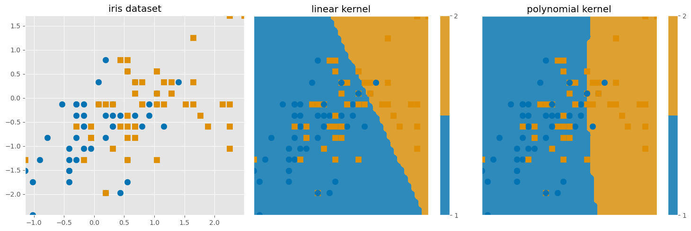
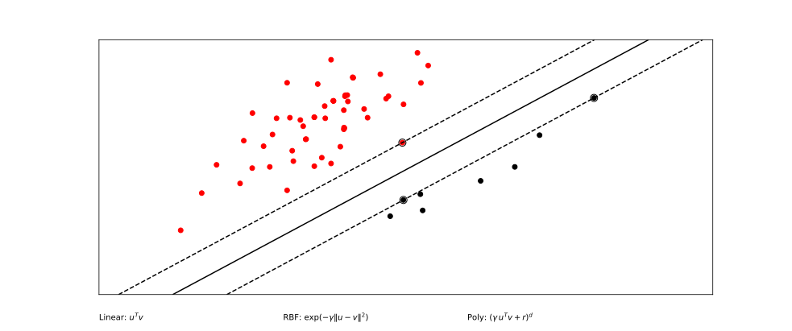
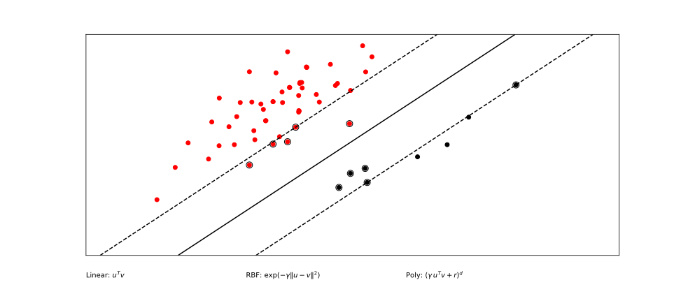
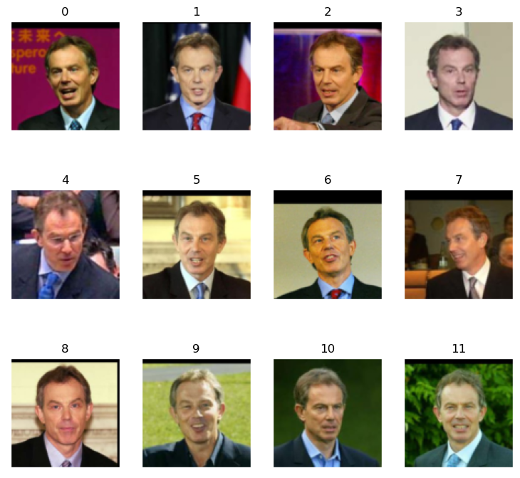
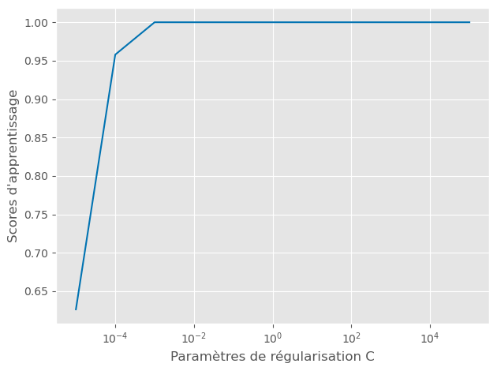

TP : Support Vector Machine

Introduction
Dans ce rapport, nous présentons une étude sur l’application des SVM (Machines à Vecteurs de Support) pour la classification de données. Nous abordons plusieurs aspects, tels que l’impact des noyaux linéaires et polynomiaux, l’ajout de variables de nuisance, et la réduction de dimension avec PCA.
Mathématiquement, Le modèle SVM optimise la fonction suivante : \[ \underset{\mathbf{w},b}{argmin} \left( \frac{1}{2} ||\mathbf{w}||^2 \right) + C \sum_{i=1}^{n} \max(0, 1 - y_i(\mathbf{w} \cdot \mathbf{x}_i + b)) \]
Le paramètre C contrôle le compromis entre la maximisation de la marge et la réduction des erreurs de classification sur les données d’entraînement.
Les algorithmes sont testés sur des jeux de données tels que Iris et Labeled Faces in the Wild (LFW).
Question 1 :
Nous appliquons un SVM à noyau linéaire sur l’ensemble de données Iris avec lequel on fait une recherche par grille pour optimiser le paramètre de régularisation C.
# Définir les paramètres pour la recherche de grille
parameters = {'kernel': ['linear'], 'C': list(np.logspace(-3, 3, 200))}
# Utiliser GridSearchCV pour optimiser le modèle SVM avec noyau linéaire
clf_linear = GridSearchCV(SVC(), parameters, n_jobs=1)
clf_linear.fit(X_train, y_train) # Entraînement du modèle
# Calculer les scores de généralisation et les afficher
train_score = clf_linear.score(X_train, y_train)
test_score = clf_linear.score(X_test, y_test)
print(f'Generalization score for linear kernel: {train_score}, {test_score}')Renvoie en sortie :
- Précision sur l’ensemble de test 0.62
- Précision sur l’ensemble d’entraînement : 0.72
Question 2 :
Nous appliquons cette fois un SVM à noyau polynomial.
# Définis les paramètres pour le noyau polynomial
Cs = list(np.logspace(-3, 3, 5))
gammas = 10. ** np.arange(1, 2)
degrees = np.r_[1, 2, 3]
parameters = {'kernel': ['poly'], 'C': Cs, 'gamma': gammas, 'degree': degrees}
# Utilise GridSearchCV pour optimiser le modèle SVM avec noyau polynomial
clf_poly = GridSearchCV(SVC(), parameters, cv=5)
clf_poly.fit(X_train, y_train)
# Affiche les meilleurs paramètres
print(clf_poly.best_params_)On obtient alors en sortie :
C: 0.031- Degré (polynôme) : 1
- Gamma : 10.0
Avec comme score de généralisation de 0.71 (pour les donnés d’entraînement) et 0.68 pour (pour les donnés tests)

Après avoir exécuté plusieurs fois le code pour le SVM à noyau linéaire et le SVM à noyau polynomial, j’ai constaté que la précision obtenue avec chaque méthode restait sensiblement la même. On peut penser que rajouter de la complexité au modèle n’est pas toujours une bonne chose.
Question 3 (bonus) :
En utilisant le script svm_gui.py et en faisant varier le paramètre C on obtient ces graphiques :

C=1
C=0.001Le paramètre C dans un SVM contrôle le compromis entre une marge large et la minimisation des erreurs de classification.
Lorsque C est faible, l’algorithme SVM donne plus de priorité à l’augmentation de la marge entre les classes Graphiquement, cela peut se traduire par une frontière de décision plus « souple », avec plus de points situés du mauvais côté de la frontière.
Lorsque C est plus grand, la frontière de décision sera plus serrée autour des points d’entraînement, avec une marge plus petite ce qui peut conduire à une meilleure précision sur l’ensemble d’entrainement mais peut cependant entrainer du surapprentissage.
Question 4 :
Nous allons optimiser le paramètre C avec SVM linéaire sur le jeu de donnée de visages fournis à l’adresse indiqué. En voici un extrait imagé :

Pour ça on utilisera GridSearchCV pour tester plusieurs variables de C.
Cs = 10. ** np.arange(-5, 6)
scores = []
for C in Cs:
clf = SVC(kernel='linear', C=C)
clf.fit(X_train, y_train)
scores.append(clf.score(X_train, y_train))
# Meilleur C et graphique des scores
best_C = Cs[np.argmax(scores)]
plt.plot(Cs, scores)
plt.xscale('log')
plt.title(f"Optimisation du paramètre C")
plt.show()
print(f"Meilleur paramètre C : {best_C}")
print(f"Meilleur score: {np.max(scores)}")On trouve comme résultat en sortie une accuracy de 1 cela indique que le modèle est bien capable de généraliser les données de test.

Le modèle se comporte de manière optimale avec un C autour de \(10^{-3}\), où il atteint le meilleur score. Pour des valeurs de C trop petites, le modèle sous-apprend, tandis que pour des valeurs très élevées de C, le modèle ne montre pas de sur-apprentissage, mais n’améliore pas non plus ses performances.
Question 5 :
Nous avons ajouter des variables de nuisances (250) aux données pour étudier l’impact du bruit sur les performances du modèle.
# Ajout de 250 variables de nuisance
noise = sigma * np.random.randn(n_samples, 250)
X_noisy = np.concatenate((X, noise), axis=1)
X_noisy = X_noisy[np.random.permutation(X.shape[0])]
# Validation croisée avec bruit
run_svm_cv(X_noisy, y)Sans bruit, le modèle SVM obtenait une accuracy d’environ 95%. Après ajout du bruit, l’accuracy est tombée à 52%, ce qui montre l’importance d’éliminer les variables non pertinentes.
Question 6 :
En réduisant la dimensionnalité des données à l’aide de l’Analyse en Composantes Principales (ACP), nous avons pu observer une amélioration du score. Le tableau ci-dessous montre les résultats obtenus en fonction du nombre de composantes principales conservées.
| Nombre de composantes | Score |
|---|---|
| 3 | 0.5519 |
| 10 | 0.6388 |
| 20 | 0.6172 |
n_components = 20 # jouer avec ce parametre
print(f'Score après réduction de dimension avec {n_components} composantes principales')
pca = PCA(n_components=n_components).fit(X_noisy)
X_pca = pca.transform(X_noisy)
run_svm_cv(X_pca,y)Nous constatons une amélioration du score de classification en prenant en compte un certain nombre de composantes principales (comme 10 dans cet exemple). Toutefois, si trop de composantes sont conservées, le score commence à diminuer à nouveau.